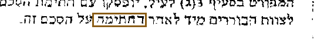

כך במקור
כך במקור (sic): המסמך מדפיס כאן משהו שגוי — טעות דפוס, מילה או מספר כפולים, תאריך שאינו יכול להיות — והמאגר מביא אותו כפי שהוא מודפס, בלי לתקן. כל סימון נבדק מול העמוד הסרוק. ברשימה שלהלן כל הסימונים במאגר, מסמך אחר מסמך: הסעיף שבו הם מופיעים, המילים שסביבם — המילה המסומנת בקו גלי, כמו בדף המסמך — חיתוך מן הסריקה שבו אפשר לראות את הטעות בעמוד עצמו, והסבר קצר מדוע.
הסכם קיבוצי — שכר ותנאי עבודה של העובדים המדורגים בדירוג עובדי הוראה
- סעיף 28.גמספור
28.ג בשנה"ל תשנ"ד ותשנ"ה יועמדו המכסות הבאות …

מן הסריקה, עמ' 9 רצף המספור: 28.א · 28.ג · 28.ד · 28.ה
הרשימה בסעיף 28 עוברת מ-א. ל-ג.; אין בה ב.
הסכם קיבוצי — תוספות שכר לעובדי ההוראה: ערך תוספות השכר שניתנו לדירוג המהנדסים
- פתיחחסר או מיותר
הואיל: ועל פי סעיף 34.ג להסכם הקיבוצי שתינתן שנחתם בין הצדדים ביום 11.5.93 (להלן - …

מן הסריקה, עמ' 1 מילה שאין לה מקום במשפט ("להסכם הקיבוצי שתינתן שנחתם").
- סעיף 8טעות כתיב
… החינוך הפורמלי (בתי ספר בחינוך היסודי חט"ב, חינוך על יסודי, מכללות וסימנרים) מענק יובל בשיעור 60% מהמשכורת הקובעת …

מן הסריקה, עמ' 5 צ"ל "וסמינרים".
הסכם קיבוצי — התחייבות המעסיקים לפי סעיף 34ג' ל"הסכם 93": ערך תוספות השכר שינתנו לדירוג המהנדסים
- סעיף 11 (כותרת)מספור
11 מענק יובל

מן הסריקה, עמ' 7 רצף המספור: … · 6 · 7 · 8 · 9 · 11 · 12 · 13 · 14 · 15 · …
המספור עובר מסעיף 9 לסעיף 11; אין בהסכם סעיף 10.
- סעיף 15.בכפילות
… הסכום יועבר להסתדרות המורים בהתאם לתוכניות שיוגשו למשרד החינוך בנושא הההשתלמויות והפעלתן.

מן הסריקה, עמ' 36 האות ה' הודפסה שלוש פעמים; צ"ל "ההשתלמויות".
- סעיף 1, נספח א'טעות כתיב
חישוב התוספת לכל שנת ותק יהיה כאחת מהשכר המשולב בשנת הוותק הקודמת לה.

מן הסריקה, עמ' 16 צ"ל "כאחוז".
- סעיף 1, נספח ב'טעות כתיב
חישוב התוספת לכל שנת ותק יהיה כאחת מהשכר המשולב בשנת הוותק הקודמת לה.

מן הסריקה, עמ' 17 צ"ל "כאחוז".
- סעיף 1, נספח ג'טעות כתיב
חישוב התוספת לכל שנת ותק יהיה כאחת מהשכר המשולב בשנת הוותק הקודמת לה.

מן הסריקה, עמ' 18 צ"ל "כאחוז".
- סעיף 1, נספח ד'טעות כתיב
חישוב התוספת לכל שנת ותק יהיה כאחת מהשכר המשולב בשנת הוותק הקודמת לה.

מן הסריקה, עמ' 19 צ"ל "כאחוז".
- סעיף 1, נספח ה'טעות כתיב
חישוב התוספת לכל שנת ותק יהיה כאחת מהשכר המשולב בשנת הוותק הקודמת לה.

מן הסריקה, עמ' 20 צ"ל "כאחוז".
- חתימותטעות כתיב
הממונ על האוצר

מן הסריקה, עמ' 25 "הממונ" קטוע; צ"ל "הממונה".
הסכם קיבוצי — הפרשה לקופת גמל בגין רכיבי שכר ותשלומים אחרים שאינם פנסיוניים
- סעיף 3טעות כתיב
לצורך הסכם זה פנסיה צוברת משמעת פנסיה צוברת במסגרת קרן פנסיה מקיפה.

מן הסריקה, עמ' 2 צ"ל "משמעה".
- סעיף 5(א)(1)טעות כתיב
… תחילת ההפרשה בפועל, תבוצע בשכר הראשון לאחר בחירת קופות הגמל - כפי שיחברו ע"י האיגודים המקצועיים בהסכמת המעסיקים …

מן הסריקה, עמ' 3 צ"ל "שייבחרו".
- סעיף 13(ב)טעות כתיב
… תמשיך בהפרשה לקופת גמל ולא לפנסיה צוברת, ואולם ההפרשה לקופת גמל לכולוסיה זו, במקרה זה, תהיה תוך התאמה לאמור …

מן הסריקה, עמ' 5 צ"ל "לאוכלוסיה".
- טבלהטעות כתיב
השם הסתדרות העובדים הכללית החדשה

מן הסריקה, עמ' 6 צ"ל "בשם".
הסכם קיבוצי — תיקון סעיף 18 (א) להסכם דרגות קידום במכללות להכשרת עובדי הוראה
- פתיחטעות כתיב
הואיל: ובין הצדדים נחתם הסכם קיבוצי בתאריך 22 במאי 1997 בדבר הנהלת דרגות קידום במכללות להכשרת עובדי הוראה …

מן הסריקה, עמ' 1 שם ההסכם מ-22.5.1997 הוא "בדבר הנהגת דרגות קידום"; כאן הודפס "הנהלת".
הסכם קיבוצי — תגמול בגין ליווי טיולים ופעילות חוץ בית ספרית
- פתיחטעות כתיב
שנערך ונחתם ביום י"ז בבאלול התשנ"ח

מן הסריקה, עמ' 1 צ"ל "באלול".
הסכם קיבוצי — הפרשה לקופת גמל, ארגון המורים
- פתיחטעות כתיב
… עבודה במשרד האוצר, מר יוסי קוצ'יק ומנכ"ל משרד החינוך מר בן-ציון ז"ל;

מן הסריקה, עמ' 1 שם המנכ"ל (בן-ציון דל) הודפס "ז"ל"; ההסכם התאום של הסתדרות המורים מאותו יום מדפיס "דל".
- סעיף 8טעות כתיב
… שעה. כמו כן אין בהסכם זה כשלעצמו משום הכרה ברכיבים כאמור לצורך פנסיה לע פי חוק.

מן הסריקה, עמ' 3 "לע": צ"ל "על" ("על פי חוק").
- נספחטעות כתיב
… סעיף 10 להסכם, תועבר לדיון בועדה פריטטית של נציגי הצדדים להסכם לפי סעי 13 להסכם מיום 8.9.98.

מן הסריקה, עמ' 4 צ"ל "סעיף".
- חתימותטעות כתיב
ממונה על הזכר והסכמי עבודה

מן הסריקה, עמ' 4 צ"ל "השכר".
- נספחטעות כתיב
כ"ח בכסלן התשנ"ט

מן הסריקה, עמ' 5 צ"ל "בכסלו".
- נספחטעות כתיב
… במהלך המו"מ לכריתת ההסכם הקיבוצי שעניינו הפרשה וניכוי לקופת גמל, כדקלמן:

מן הסריקה, עמ' 5 צ"ל "כדלקמן".
- סעיף 1, נספחטעות כתיב
בסעיף 5 (ב) להסכם שבדנון, הוסכם כי הפרשה בגין מענק יובל וקצובת …

מן הסריקה, עמ' 5 צ"ל "שבנדון".
הסכם קיבוצי — הפרשה לקופת גמל, הסתדרות המורים


הסכם קיבוצי — הסכם שכר לעובדים בשירות מי מהמעסיקים לתקופה שמיום 1.1.99 ועד ליום 31.12.2001
- נספחתאריך שגוי
ו' בשבט התשס"א

מן הסריקה, עמ' 9 המכתב מתוארך 31.1.2001, שהוא ז' בשבט התשס"א (כפי שמדפיס מכתב השר מאותו יום), ולא ו' בשבט.
חוזר תשסז/7 - קצובת ביגוד לשנת הלימודים תשס"ז
- בגוף המסמךטעות כתיב
עובד בדירוג עובדי הוראה, זכאי לקצובת ביגוד כנהוג כלפי קבלי קהל בשירות המדינה, לשנת הלימודים

מן הסריקה, עמ' 1 צ"ל "מקבלי קהל".
- בגוף המסמךטעות כתיב
עובד הוראה בחינוך הטכנולוגי/מדריך קצועי באחד המקצועות המפורטים להלן, יהיה זכאי …

מן הסריקה, עמ' 2 צ"ל "מקצועי".
- בגוף המסמךטעות כתיב
עובד הוראה בחינוך הטכנולוגי/מדריך קצועי באחד המקצועות המפורטים להלן יהיה זכאי …

מן הסריקה, עמ' 2 צ"ל "מקצועי".
הסכם קיבוצי לתחילת יישום הרפורמה במערכת החינוך
- סעיף 5כפילות
… לפי רשימה שגובשה על-ידי משרד החינוך, ולגבי כל מורה חדש כמפורט בהסכם זה..

מן הסריקה, עמ' 2 נקודה כפולה.
- סעיף 32כפילות
… יוח"א, עבור שעות הוראה פרונטליות הכלולות במבנה שבוע העבודה שבמסגרת הרפורמה..

מן הסריקה, עמ' 11 נקודה כפולה.
- סעיף 34כפילות
השכר לו היה זכאי מורה, , בשל העסקה ב – 100% משרה, על-פי תפקידיו, …

מן הסריקה, עמ' 12 פסיק כפול: "מורה, ,".
- סעיף 47(ב) 2כפילות
… בה שובץ בפועל (לפי החישוב בסעיף א לעיל) בהתאם לותקו מדי חודש בחודשו. .

מן הסריקה, עמ' 19 נקודה כפולה: "בחודשו. .".
- סעיף 52(ב)פיסוק ומירכאות
… כפי שיפורטו במכתב שיימסר להסתדרות המורים לקראת המשא ומתן על ההסכם הכולל).;

מן הסריקה, עמ' 22 סוגר שאין לפניו סוגר פותח בסעיף קטן (ב), ואחריו נקודה ונקודה-פסיק.
- סעיף 56(ג)מספור
(ג) התוספת האישית האחוזית לא תוכר כתוספת …

מן הסריקה, עמ' 23 רצף המספור: (א) · (ג) · (ד) · (ה)
סעיף 56 עובר מ-(א) ל-(ג); אין בו (ב).
- סעיף 57(א)חסר או מיותר
בעת השיבוץ כאמור בסעיף __ לעיל:

מן הסריקה, עמ' 23 מספר הסעיף לא מולא: הדף מדפיס קו ריק במקום ההפניה.
- סעיף 74פיסוק ומירכאות
יועץ חינוכי המועסק בלפחות 7 שעות ייעוץ יהיה זכאי לגמול ייעוץ כמפורט להלן:.

מן הסריקה, עמ' 29 נקודתיים ואחריהן נקודה.
הסכם קיבוצי — פסק בוררות בעניין שחיקת שכר עובדי הוראה
- סעיף 5פיסוק ומירכאות
… בגין התקופה 1.1.02 - 31.12.07, לרבות מכוח הסכמי השכר מהשנים 1993 - 1995,. לא יתנהל כל משא ומתן נוסף בעניין זה.

מן הסריקה, עמ' 3 פסיק ואחריו נקודה.
הסכם קיבוצי — תשלום בגין שחיקת שכר עובדי הוראה מול שכר המהנדסים לשנים 2002 - 2007
- סעיף 4טעות כתיב
… זה. הודעה משותפת מטעם הצדדים להסכם זה תועבר לצוות הבוררים מיד לאחר דחתימה על הסכם זה.

מן הסריקה, עמ' 2 צ"ל "החתימה". בסריקה אין לאות הראשונה רגל שמאלית, והיא נראית ד'; הסריקה אינה מכריעה אם כך הודפס או שרגלה השמאלית של ה' אבדה בפקס.
הסכם קיבוצי ליישום רפורמת "אופק חדש" במערכת החינוך
- פתיחחסר או מיותר
שנחתם ביום _________לחודש _________2008

מן הסריקה, עמ' 1 תאריך החתימה לא מולא: הדף מדפיס קווים ריקים במקום היום והחודש. בעותק החתום, עותק הרשם, נכתבו בהם בכתב יד "25" ו"דצמבר" — 25 בדצמבר 2008.
- סעיף 7(טז)מספור
(טז) יועץ חינוכי – מי שמהווה חלק מהצוות …

מן הסריקה, עמ' 4 רצף המספור: … · (יא) · (יב) · (יג) · (יד) · (טז) · (יז)
ההגדרות בסעיף 7 עוברות מ-(יד) ל-(טז); אין בהן (טו). הסכם 29.2.2012 סימן את (טז) כ-(טו) בסעיף 5(ב).
- סעיף 10(ד)כפילות
… ישובו עובדי ההוראה לעבודה שלא על-פי תנאי הרפורמה, בשנת הלימודים תש"ע בלבד..

מן הסריקה, עמ' 5 נקודה כפולה.
- סעיף 27(ז)הפניה שגויה
… השעות השבועיות למשרה מלאה המפורט בסעיפים 15 עד שגיאה! מקור ההפניה לא נמצא.23 לעיל, כמפורט בטבלאות המצ"ב כנספחים א' ו …

מן הסריקה, עמ' 10 הודעת השגיאה של מעבד התמלילים ("שגיאה! מקור ההפניה לא נמצא.") הודפסה במקום הפניה לסעיף; הסכם 29.2.2012 נתן לסעיף-קטן נוסח חדש בסעיף 17(א): "בסעיפים 15 עד 18 ו — 21 עד 23 לעיל".
- סעיף 27(ח)כפילות
עובדי הוראה בתפקידים פארא-רפואיים ומורות משלבות,, המועסקים בבית ספר בהיקף נמוך מ- 1/3 …

מן הסריקה, עמ' 10 פסיק כפול.
- סעיף 61הפניה שגויה
למען הסר ספק מובהר, כי סעיפים 59 ו – 8660 לא יחולו על מורה לא אקדמאי אשר עבר …

מן הסריקה, עמ' 27 צ"ל "60", כפי שתיקן הסכם 29.2.2012 בסעיף 87(ד).
- סעיף 61(ב)כפילות
… בה שובץ בפועל (לפי החישוב בסעיף א לעיל) בהתאם לותקו מדי חודש בחודשו. .

מן הסריקה, עמ' 28 נקודה כפולה: "בחודשו. .".
- סעיף 75(ג)הפניה שגויה
… בו הנו מועסק, יחולו התנאים הקבועים בסעיפים 85 שגיאה! מקור ההפניה לא נמצא.(א) ו - 86 להלן.

מן הסריקה, עמ' 35 הודעת השגיאה של מעבד התמלילים ("שגיאה! מקור ההפניה לא נמצא.") הודפסה במקום הפניה לסעיף; הסכם 29.2.2012 מחק את המלים בסעיף 87(ז).
- סעיף 104(ג)הפניה שגויה
… בו הנו מועסק, יחולו התנאים הקבועים בסעיפים 0 שגיאה! מקור ההפניה לא נמצא.(א) ו - 115 להלן.

מן הסריקה, עמ' 45 הודעת השגיאה של מעבד התמלילים ("שגיאה! מקור ההפניה לא נמצא.") הודפסה במקום הפניה לסעיף; צ"ל "בסעיפים 114 ו — 115 להלן", כפי שתיקן הסכם 29.2.2012 בסעיף 87(יב).
- סעיף 116הפניה שגויה
למען הסר ספק מובהר, כי סעיפים 114ו - 114 לא יחולו על סגן מנהל ראשון שאינו אקדמאי …

מן הסריקה, עמ' 48 צ"ל "114ו - 115", כפי שתיקן הסכם 29.2.2012 בסעיף 87(יח).
- סעיף 131פיסוק ומירכאות
יועץ חינוכי המועסק בלפחות 7 שעות ייעוץ יהיה זכאי לגמול ייעוץ כמפורט להלן:.

מן הסריקה, עמ' 51 נקודתיים ואחריהן נקודה.
- סעיף 156כפילות
… בהסכם זה. למען הסר ספק, סעיף זה לא יחול על העניינים המנויים בסעיף 154154 לעיל ובסעיף 155 (ב) – (ד) לעיל.

מן הסריקה, עמ' 59 מספר הסעיף הודפס פעמיים; צ"ל "154", כפי שתיקן הסכם 29.2.2012 בסעיף 87(כ).
הסכם קיבוצי ליישום רפורמת "אופק חדש" במערכת החינוך
- סעיף 7(טז)מספור
(טז) יועץ חינוכי – מי שמהווה חלק מהצוות …

מן הסריקה, עמ' 4 רצף המספור: … · (יא) · (יב) · (יג) · (יד) · (טז) · (יז)
ההגדרות בסעיף 7 עוברות מ-(יד) ל-(טז); אין בהן (טו). הסכם 29.2.2012 סימן את (טז) כ-(טו) בסעיף 5(ב).
- סעיף 10(ד)כפילות
… ישובו עובדי ההוראה לעבודה שלא על-פי תנאי הרפורמה, בשנת הלימודים תש"ע בלבד..

מן הסריקה, עמ' 5 נקודה כפולה.
- סעיף 27(ז)הפניה שגויה
… השעות השבועיות למשרה מלאה המפורט בסעיפים 15 עד שגיאה! מקור ההפניה לא נמצא.23 לעיל, כמפורט בטבלאות המצ"ב כנספחים א' ו …

מן הסריקה, עמ' 10 הודעת השגיאה של מעבד התמלילים ("שגיאה! מקור ההפניה לא נמצא.") הודפסה במקום הפניה לסעיף; הסכם 29.2.2012 נתן לסעיף-קטן נוסח חדש בסעיף 17(א): "בסעיפים 15 עד 18 ו — 21 עד 23 לעיל".
- סעיף 27(ח)כפילות
עובדי הוראה בתפקידים פארא-רפואיים ומורות משלבות,, המועסקים בבית ספר בהיקף נמוך מ- 1/3 …

מן הסריקה, עמ' 10 פסיק כפול.
- סעיף 61הפניה שגויה
למען הסר ספק מובהר, כי סעיפים 59 ו – 8660 לא יחולו על מורה לא אקדמאי אשר עבר …

מן הסריקה, עמ' 27 צ"ל "60", כפי שתיקן הסכם 29.2.2012 בסעיף 87(ד).
- סעיף 61(ב) 2כפילות
… בה שובץ בפועל (לפי החישוב בסעיף א לעיל) בהתאם לותקו מדי חודש בחודשו. .

מן הסריקה, עמ' 28 נקודה כפולה: "בחודשו. .".
- סעיף 75(ג)הפניה שגויה
… בו הנו מועסק, יחולו התנאים הקבועים בסעיפים 85 שגיאה! מקור ההפניה לא נמצא.(א) ו - 86 להלן.

מן הסריקה, עמ' 35 הודעת השגיאה של מעבד התמלילים ("שגיאה! מקור ההפניה לא נמצא.") הודפסה במקום הפניה לסעיף; הסכם 29.2.2012 מחק את המלים בסעיף 87(ז).
- סעיף 100כפילות
… א' –ט'), לפי בסיס משרה של חטיבת ביניים (24 ש"ש), יחולו הוראות סעיף 4949 לעיל.

מן הסריקה, עמ' 44 מספר הסעיף הודפס פעמיים; צ"ל "49".
- סעיף 104(ג)הפניה שגויה
… בו הנו מועסק, יחולו התנאים הקבועים בסעיפים 0 שגיאה! מקור ההפניה לא נמצא.(א) ו - 115 להלן.

מן הסריקה, עמ' 45 הודעת השגיאה של מעבד התמלילים ("שגיאה! מקור ההפניה לא נמצא.") הודפסה במקום הפניה לסעיף; צ"ל "בסעיפים 114 ו — 115 להלן", כפי שתיקן הסכם 29.2.2012 בסעיף 87(יב).
- סעיף 107כפילות
המרת השכר לסגני מנהלים ראשונים שאינם אקדמאים, כאמור בסעיף 104104, תיעשה בהתאם לכללי המרת השכר של סגן …

מן הסריקה, עמ' 46 מספר הסעיף הודפס פעמיים; צ"ל "104".
- סעיף 116הפניה שגויה
למען הסר ספק מובהר, כי סעיפים 114ו - 114 לא יחולו על סגן מנהל ראשון שאינו אקדמאי …

מן הסריקה, עמ' 48 צ"ל "114ו - 115", כפי שתיקן הסכם 29.2.2012 בסעיף 87(יח).
- סעיף 131פיסוק ומירכאות
יועץ חינוכי המועסק בלפחות 7 שעות ייעוץ יהיה זכאי לגמול ייעוץ כמפורט להלן:.

מן הסריקה, עמ' 50 נקודתיים ואחריהן נקודה.
- סעיף 156כפילות
… בהסכם זה. למען הסר ספק, סעיף זה לא יחול על העניינים המנויים בסעיף 154154 לעיל ובסעיף 155 (ב) – (ד) לעיל.

מן הסריקה, עמ' 58 מספר הסעיף הודפס פעמיים; צ"ל "154", כפי שתיקן הסכם 29.2.2012 בסעיף 87(כ).
חוזר תשס"ט/4 - הסכם קיבוצי עם ארגון המורים והוראות בנושא הסדר לתגמול עובדי הוראה עבור עבודה עם תלמידים ליקויי למידה
- סעיף 1 ג 1) א)טעות כתיב
… ותוספת 2008. התוספת תחושב על בסיס השכר האמור למשרה מלאה, לפי דרגתו ווותקו של עובד הוראה, ללא קשר לחלקיות משרתו;

מן הסריקה, עמ' 1 צ"ל "וותקו"; הו"ו הודפסה שלוש פעמים.
חוזר תשס"ט/8 - הסכם קיבוצי בנושא גמול הכנה לבגרות במקצוע האזרחות
- סעיף 3טעות כתיב
התשלומים הנובעים מהסכם זה יבוצעו החל ממשכרות חודש מאי 2009 ולכל המאוחר החל במשכורת …

מן הסריקה, עמ' 2 צ"ל "ממשכורת".
הסכם קיבוצי — קיצור הדחייה של מועד עדכון שכר
- חותמת הרישוםתאריך שגוי
חוק הסכמים קיבוציים תשי"ג - 1957

מן הסריקה, עמ' 1 חותמת הרשם מדפיסה "תשי"ג" (1953) לצד 1957; חוק הסכמים קיבוציים הוא מהתשי"ז.
הסכם קיבוצי — טבלת השכר למורים, תוספת 2011
- חותמת הרישוםתאריך שגוי
חוק הסכמים קיבוציים תשי"ג - 1957 · הסכם קיבוצי זה נרשם כחוק · …

מן הסריקה, עמ' 1 חותמת הרשם מדפיסה "תשי"ג" (1953) לצד 1957; חוק הסכמים קיבוציים הוא מהתשי"ז.
הסכם קיבוצי כללי ליישום רפורמת "עוז לתמורה" בחטיבות העליונות
- נספח א'חסר או מיותר
מורה אם לפי סעיף ___ (א)

מן הסריקה, עמ' 33 מספר הסעיף לא מולא: הדף מדפיס קו ריק במקומו; הכוונה כנראה לסעיף 11 ("שעות למורות אם"), שסעיפיו הקטנים (א) ו-(ב) הם שני סוגי הטבלאות.
- נספח א'חסר או מיותר
מורה אם מגיל 50 עד גיל 55 לפי סעיף ___ (א)

מן הסריקה, עמ' 33 מספר הסעיף לא מולא: הדף מדפיס קו ריק במקומו; הכוונה כנראה לסעיף 11 ("שעות למורות אם"), שסעיפיו הקטנים (א) ו-(ב) הם שני סוגי הטבלאות.
- נספח א'חסר או מיותר
מורה אם מעל גיל 55 לפי סעיף ___ (א)

מן הסריקה, עמ' 33 מספר הסעיף לא מולא: הדף מדפיס קו ריק במקומו; הכוונה כנראה לסעיף 11 ("שעות למורות אם"), שסעיפיו הקטנים (א) ו-(ב) הם שני סוגי הטבלאות.
- נספח א'חסר או מיותר
מורה אם לפי סעיף ___ (ב)

מן הסריקה, עמ' 33 מספר הסעיף לא מולא: הדף מדפיס קו ריק במקומו; הכוונה כנראה לסעיף 11 ("שעות למורות אם"), שסעיפיו הקטנים (א) ו-(ב) הם שני סוגי הטבלאות.
- נספח א'חסר או מיותר
מורה אם מגיל 50 עד גיל 55 לפי סעיף ___ (ב)

מן הסריקה, עמ' 33 מספר הסעיף לא מולא: הדף מדפיס קו ריק במקומו; הכוונה כנראה לסעיף 11 ("שעות למורות אם"), שסעיפיו הקטנים (א) ו-(ב) הם שני סוגי הטבלאות.
- נספח א'חסר או מיותר
מורה אם מעל גיל 55 לפי סעיף ___ (ב)

מן הסריקה, עמ' 33 מספר הסעיף לא מולא: הדף מדפיס קו ריק במקומו; הכוונה כנראה לסעיף 11 ("שעות למורות אם"), שסעיפיו הקטנים (א) ו-(ב) הם שני סוגי הטבלאות.
- נספח א'1חסר או מיותר
מורה אם לפי סעיף ___ (א)

מן הסריקה, עמ' 34 מספר הסעיף לא מולא: הדף מדפיס קו ריק במקומו; הכוונה כנראה לסעיף 11 ("שעות למורות אם"), שסעיפיו הקטנים (א) ו-(ב) הם שני סוגי הטבלאות.
- נספח א'1חסר או מיותר
מורה אם מגיל 50 עד גיל 55 לפי סעיף ___ (א)

מן הסריקה, עמ' 34 מספר הסעיף לא מולא: הדף מדפיס קו ריק במקומו; הכוונה כנראה לסעיף 11 ("שעות למורות אם"), שסעיפיו הקטנים (א) ו-(ב) הם שני סוגי הטבלאות.
- נספח א'1חסר או מיותר
מורה אם מעל גיל 55 לפי סעיף ___ (א)

מן הסריקה, עמ' 34 מספר הסעיף לא מולא: הדף מדפיס קו ריק במקומו; הכוונה כנראה לסעיף 11 ("שעות למורות אם"), שסעיפיו הקטנים (א) ו-(ב) הם שני סוגי הטבלאות.
- נספח א'1חסר או מיותר
מורה אם לפי סעיף ___ (ב)

מן הסריקה, עמ' 34 מספר הסעיף לא מולא: הדף מדפיס קו ריק במקומו; הכוונה כנראה לסעיף 11 ("שעות למורות אם"), שסעיפיו הקטנים (א) ו-(ב) הם שני סוגי הטבלאות.
- נספח א'1חסר או מיותר
מורה אם מגיל 50 עד גיל 55 לפי סעיף ___ (ב)

מן הסריקה, עמ' 34 מספר הסעיף לא מולא: הדף מדפיס קו ריק במקומו; הכוונה כנראה לסעיף 11 ("שעות למורות אם"), שסעיפיו הקטנים (א) ו-(ב) הם שני סוגי הטבלאות.
- נספח א'1חסר או מיותר
מורה אם מעל גיל 55 לפי סעיף ___ (ב)

מן הסריקה, עמ' 34 מספר הסעיף לא מולא: הדף מדפיס קו ריק במקומו; הכוונה כנראה לסעיף 11 ("שעות למורות אם"), שסעיפיו הקטנים (א) ו-(ב) הם שני סוגי הטבלאות.
- נספח א'2חסר או מיותר
מורה אם לפי סעיף ___ (א)

מן הסריקה, עמ' 35 מספר הסעיף לא מולא: הדף מדפיס קו ריק במקומו; הכוונה כנראה לסעיף 11 ("שעות למורות אם"), שסעיפיו הקטנים (א) ו-(ב) הם שני סוגי הטבלאות.
- נספח א'2חסר או מיותר
מורה אם מגיל 50 עד גיל 55 לפי סעיף ___ (א)

מן הסריקה, עמ' 35 מספר הסעיף לא מולא: הדף מדפיס קו ריק במקומו; הכוונה כנראה לסעיף 11 ("שעות למורות אם"), שסעיפיו הקטנים (א) ו-(ב) הם שני סוגי הטבלאות.
- נספח א'2חסר או מיותר
מורה אם מעל גיל 55 לפי סעיף ___ (א)

מן הסריקה, עמ' 35 מספר הסעיף לא מולא: הדף מדפיס קו ריק במקומו; הכוונה כנראה לסעיף 11 ("שעות למורות אם"), שסעיפיו הקטנים (א) ו-(ב) הם שני סוגי הטבלאות.
- נספח א'2חסר או מיותר
מורה אם לפי סעיף ___ (ב)

מן הסריקה, עמ' 35 מספר הסעיף לא מולא: הדף מדפיס קו ריק במקומו; הכוונה כנראה לסעיף 11 ("שעות למורות אם"), שסעיפיו הקטנים (א) ו-(ב) הם שני סוגי הטבלאות.
- נספח א'2חסר או מיותר
מורה אם מגיל 50 עד גיל 55 לפי סעיף ___ (ב)

מן הסריקה, עמ' 35 מספר הסעיף לא מולא: הדף מדפיס קו ריק במקומו; הכוונה כנראה לסעיף 11 ("שעות למורות אם"), שסעיפיו הקטנים (א) ו-(ב) הם שני סוגי הטבלאות.
- נספח א'2חסר או מיותר
מורה אם מעל גיל 55 לפי סעיף ___ (ב)

מן הסריקה, עמ' 35 מספר הסעיף לא מולא: הדף מדפיס קו ריק במקומו; הכוונה כנראה לסעיף 11 ("שעות למורות אם"), שסעיפיו הקטנים (א) ו-(ב) הם שני סוגי הטבלאות.
- נספח א'3חסר או מיותר
מורה אם לפי סעיף ___ (א)

מן הסריקה, עמ' 36 מספר הסעיף לא מולא: הדף מדפיס קו ריק במקומו; הכוונה כנראה לסעיף 11 ("שעות למורות אם"), שסעיפיו הקטנים (א) ו-(ב) הם שני סוגי הטבלאות.
- נספח א'3חסר או מיותר
מורה אם מגיל 50 עד גיל 55 לפי סעיף ___ (א)

מן הסריקה, עמ' 36 מספר הסעיף לא מולא: הדף מדפיס קו ריק במקומו; הכוונה כנראה לסעיף 11 ("שעות למורות אם"), שסעיפיו הקטנים (א) ו-(ב) הם שני סוגי הטבלאות.
- נספח א'3חסר או מיותר
מורה אם מעל גיל 55 לפי סעיף ___ (א)

מן הסריקה, עמ' 36 מספר הסעיף לא מולא: הדף מדפיס קו ריק במקומו; הכוונה כנראה לסעיף 11 ("שעות למורות אם"), שסעיפיו הקטנים (א) ו-(ב) הם שני סוגי הטבלאות.
- נספח א'3חסר או מיותר
מורה אם לפי סעיף ___ (ב)

מן הסריקה, עמ' 36 מספר הסעיף לא מולא: הדף מדפיס קו ריק במקומו; הכוונה כנראה לסעיף 11 ("שעות למורות אם"), שסעיפיו הקטנים (א) ו-(ב) הם שני סוגי הטבלאות.
- נספח א'3חסר או מיותר
מורה אם מגיל 50 עד גיל 55 לפי סעיף ___ (ב)

מן הסריקה, עמ' 36 מספר הסעיף לא מולא: הדף מדפיס קו ריק במקומו; הכוונה כנראה לסעיף 11 ("שעות למורות אם"), שסעיפיו הקטנים (א) ו-(ב) הם שני סוגי הטבלאות.
- נספח א'3חסר או מיותר
מורה אם מעל גיל 55 לפי סעיף ___ (ב)

מן הסריקה, עמ' 36 מספר הסעיף לא מולא: הדף מדפיס קו ריק במקומו; הכוונה כנראה לסעיף 11 ("שעות למורות אם"), שסעיפיו הקטנים (א) ו-(ב) הם שני סוגי הטבלאות.
- סעיף א, נספח ה'חסר או מיותר
… הערכת המורים, שתבוצע על פי מודל ההערכה כהגדרתו בהסכם קיבוצי מתאריך ___ (להלן: "הסכם עוז לתמורה"), תוערך איכות …

מן הסריקה, עמ' 45 תאריך ההסכם לא מולא: הדף מדפיס קו ריק במקום התאריך של "הסכם עוז לתמורה"; הכוונה כנראה להסכם זה עצמו, שמודל ההערכה שלו מפורט בסעיף 19.
- סעיף ג, הערות 5, נספח ה'מספור
5. הפיטורים הם רק מהבעלות שבה הועסק המורה …

מן הסריקה, עמ' 47 רצף המספור: 1. · 5. · 6. · 7. · 8. · 9.
ההערות בסוף נספח ה' עוברות מ-1. ל-5.; אין בהן 2. עד 4.
- סעיף 6 4, נספח ו'תאריך שגוי
לגבי בתי הספר שיבחרו להצטרף לרפורמת "עוז לתמורה" משנת הלימודים תשס"ג ואילך, משרד החינוך ינפיק הרשאות …

מן הסריקה, עמ' 56 מכתב משנת 2011 מדבר על שנת הלימודים תשס"ג (2002-2003); הכוונה כנראה לתשע"ג.
חוזר תשע"ב/4 - תשלום תוספת שחיקה לעובדי הוראה במסגרת הסכם קיבוצי כללי ליישום רפורמת "עוז לתמורה"
- סעיף 2, תחולה בטעות כתיב
מבוהר כי במקרה בו מועסק עובד הוראה על-ידי …

מן הסריקה, עמ' 1 צ"ל "מובהר".
חוזר לבעלויות תשע"ג/2 - עדכונים לגבי הסכם עוז לתמורה ביישום חלקי בשנה"ל תשע"ג
- סעיף 1(ב)טעות כתיב
… אם (אותו מס' שעות מכל סוג), בהתאם להוראות ההסכמים הקיבוציים החלים בעינין זה, אזי משכורתה תחושב לפי היקף משרה …

מן הסריקה, עמ' 1 צ"ל "בעניין".
הסכם קיבוצי — השלמה ותיקון של ההסכמות אליהן הגיעו הצדדים בהסכם הכולל
- חותמת הרישוםתאריך שגוי
חוק הסכמים קיבוציים תשי"ג - 1957 · הסכם קיבוצי זה נרשם כחוק · …

מן הסריקה, עמ' 1 חותמת הרשם מדפיסה "תשי"ג" (1953) לצד 1957; חוק הסכמים קיבוציים הוא מהתשי"ז.
- סעיף 11(ד), בנוסח המובאחסר או מיותר
טבלאות מבנה שבוע העבודה של מורה/ת שילוב מצ"ב כנספחים ______.

מן הסריקה, עמ' 5 סימון הנספח לא מולא: הדף מדפיס קו ריק במקומו.
- סעיף 17(ב), בנוסח המובאחסר או מיותר
… מלאה המפורט בסעיפים 19 ו — 20 לעיל, כמפורט בטבלאות המצ"ב כנספחים ______.

מן הסריקה, עמ' 6 סימון הנספח לא מולא: הדף מדפיס קו ריק במקומו.
- סעיף 18(א)(2)(ב)טעות כתיב
בסופו יבוא: "הריווח של מנהל בית הספר יהיה טעון אישור של …

מן הסריקה, עמ' 7 צ"ל "הדיווח", המילה שהפסקה שלפניה מתקנת.
- סעיף 23(ב)חסר או מיותר
טבלאות שכר מתוקנות, המתחילות בותק 1, מצורפות בנספח ______ להסכם זה ומחליפות את טבלאות השכר …

מן הסריקה, עמ' 9 סימון הנספח לא מולא: הדף מדפיס קו ריק במקומו.
- סעיף 23(ב)חסר או מיותר
… בנספח ______ להסכם זה ומחליפות את טבלאות השכר המצורפות בנספחים ______ להסכם הכולל.

מן הסריקה, עמ' 9 סימון הנספח לא מולא: הדף מדפיס קו ריק במקומו.
- סעיף 40(א), בנוסח המובאחסר או מיותר
… השכר המשולב הכוללות דרגות ביניים והמצורפות להסכם הכולל כנספחים ______

מן הסריקה, עמ' 18 סימון הנספח לא מולא: הדף מדפיס קו ריק במקומו.
- סעיף 51, בנוסח המובאחסר או מיותר
… של מנהל חטיבת ביניים צמודה יהיה בהתאם לטבלת השכר המצורפת כנספח ______ להסכם זה (בשיעור של 95% מהשכר הטבלאי של …

מן הסריקה, עמ' 23 סימון הנספח לא מולא: הדף מדפיס קו ריק במקומו.
- סעיף 51, בנוסח המובאחסר או מיותר
… השכר למנהלים), הכוללת דרגות ביניים לצורכי המרת השכר, והמצורפת כנספח ______ להסכם זה.

מן הסריקה, עמ' 23 סימון הנספח לא מולא: הדף מדפיס קו ריק במקומו.
- סעיף 57(א)(2), בנוסח המובאפיסוק ומירכאות
… לעיל, בשינויים המחוייבים, ובלבד שתוצאת החישוב C= A-B הינה חיובית לגביו.".

מן הסריקה, עמ' 25 המירכאות נסגרות כאן, אך הנוסח המובא נמשך בשורות שאחריו.
- סעיף 58(א), בנוסח המובאפיסוק ומירכאות
… בשינויים המחוייבים, ובלבד שתוצאת החישוב C= A-B הינה חיובית לגביו. ".

מן הסריקה, עמ' 25 המירכאות נסגרות כאן, אך הנוסח המובא נמשך בשורות שאחריו.
- סעיף 78(א)(2), בנוסח המובאטעות כתיב
… 50א לעיל, תהיה זכאית בשכרה לגמול הגבוה מבין גמול ניהול וגמול הניהול נגרר או גמול הייעוץ הנגרר.

מן הסריקה, עמ' 32 צ"ל "הנגרר", כמו "גמול הייעוץ הנגרר" שבאותו משפט.
- סעיף 82, בנוסח המובאפיסוק ומירכאות
… בשכרה לגמול הגבוה מבין גמול ניהול וגמול ניהול נגרר או גמול ייעוץ נגרר,".

מן הסריקה, עמ' 34 המירכאות נסגרות כאן, אך הנוסח המובא נמשך בשורות שאחריו.
- סעיף 87(יג)פיסוק ומירכאות
בסעיף 112(ג) להסכם הכולל, במקום "בסעיף 38 (א) עד (ג) יבוא "בסעיף 95 (א) עד (ג)".

מן הסריקה, עמ' 36 המירכאות שפותחות את הנוסח המצוטט אינן נסגרות.
הסכם קיבוצי — השלמה ותיקון של ההסכמות אליהן הגיעו הצדדים בהסכם הכולל
- סעיף 11(ד), בנוסח המובאחסר או מיותר
טבלאות מבנה שבוע העבודה של מורה/ת שילוב מצ"ב כנספחים ______.

מן הסריקה, עמ' 6 סימון הנספח לא מולא: הדף מדפיס קו ריק במקומו.
- סעיף 17(ב), בנוסח המובאחסר או מיותר
… מלאה המפורט בסעיפים 19 ו — 20 לעיל, כמפורט בטבלאות המצ"ב כנספחים ______.

מן הסריקה, עמ' 7 סימון הנספח לא מולא: הדף מדפיס קו ריק במקומו.
- סעיף 18(א)(2)(ב)טעות כתיב
בסופו יבוא: "הריווח של מנהל בית הספר יהיה טעון אישור של …

מן הסריקה, עמ' 8 צ"ל "הדיווח", המילה שהפסקה שלפניה מתקנת.
- סעיף 23(ב)חסר או מיותר
טבלאות שכר מתוקנות, המתחילות בותק 1, מצורפות בנספח ______ להסכם זה ומחליפות את טבלאות השכר …

מן הסריקה, עמ' 10 סימון הנספח לא מולא: הדף מדפיס קו ריק במקומו.
- סעיף 23(ב)חסר או מיותר
… בנספח ______ להסכם זה ומחליפות את טבלאות השכר המצורפות בנספחים ______ להסכם הכולל.

מן הסריקה, עמ' 10 סימון הנספח לא מולא: הדף מדפיס קו ריק במקומו.
- סעיף 40(א), בנוסח המובאחסר או מיותר
… השכר המשולב הכוללות דרגות ביניים והמצורפות להסכם הכולל כנספחים ______

מן הסריקה, עמ' 19 סימון הנספח לא מולא: הדף מדפיס קו ריק במקומו.
- סעיף 51, בנוסח המובאחסר או מיותר
… של מנהל חטיבת ביניים צמודה יהיה בהתאם לטבלת השכר המצורפת כנספח ______ להסכם זה (בשיעור של 95% מהשכר הטבלאי של …

מן הסריקה, עמ' 24 סימון הנספח לא מולא: הדף מדפיס קו ריק במקומו.
- סעיף 51, בנוסח המובאחסר או מיותר
… השכר למנהלים), הכוללת דרגות ביניים לצורכי המרת השכר, והמצורפת כנספח ______ להסכם זה.

מן הסריקה, עמ' 24 סימון הנספח לא מולא: הדף מדפיס קו ריק במקומו.
- סעיף 57(א)(2), בנוסח המובאפיסוק ומירכאות
… לעיל, בשינויים המחוייבים, ובלבד שתוצאת החישוב C= A-B הינה חיובית לגביו.".

מן הסריקה, עמ' 26 המירכאות נסגרות כאן, אך הנוסח המובא נמשך בשורות שאחריו.
- סעיף 58(א), בנוסח המובאפיסוק ומירכאות
… בשינויים המחוייבים, ובלבד שתוצאת החישוב C= A-B הינה חיובית לגביו. ".

מן הסריקה, עמ' 26 המירכאות נסגרות כאן, אך הנוסח המובא נמשך בשורות שאחריו.
- סעיף 78(א)(2), בנוסח המובאטעות כתיב
… 50א לעיל, תהיה זכאית בשכרה לגמול הגבוה מבין גמול ניהול וגמול הניהול נגרר או גמול הייעוץ הנגרר.

מן הסריקה, עמ' 33 צ"ל "הנגרר", כמו "גמול הייעוץ הנגרר" שבאותו משפט.
- סעיף 82, בנוסח המובאפיסוק ומירכאות
… בשכרה לגמול הגבוה מבין גמול ניהול וגמול ניהול נגרר או גמול ייעוץ נגרר,".

מן הסריקה, עמ' 35 המירכאות נסגרות כאן, אך הנוסח המובא נמשך בשורות שאחריו.
- סעיף 87(יג)פיסוק ומירכאות
בסעיף112(ג) להסכם הכולל, במקום "בסעיף 38 (א) עד (ג) יבוא " בסעיף 95 (א) עד (ג)".

מן הסריקה, עמ' 37 המירכאות שפותחות את הנוסח המצוטט אינן נסגרות.
חוזר לבעלויות תשע"ב/9 - תשלום פעימה שנייה של תוספת השכר במגזר הציבורי
- סעיף ב 2(ג)טעות כתיב
… ההסכם הקיבוצי מיום, 25.12.2008 ואשר ממשיכים להיות זכאים לתוספת השיקלית האישית האמורה (במשכורת חודש ינואר 2012 …

מן הסריקה, עמ' 1 צ"ל "השקלית".
- סעיף ב 2(ג)טעות כתיב
… האישית האמורה (במשכורת חודש ינואר 2012 לכל הפחות), תעודכן התוספת השיקלית האישית האמורה באופן ששיעור העדכון …

מן הסריקה, עמ' 1 צ"ל "השקלית".
החלטת ועדת מעקב מיום 12.3.13
- חותמת הרישוםתאריך שגוי
חוק הסכמים קיבוציים תשי"ג - 1957 · הסכם קיבוצי זה נרשם כחוק · …

מן הסריקה, עמ' 1 חותמת הרשם מדפיסה "תשי"ג" (1953) לצד 1957; חוק הסכמים קיבוציים הוא מהתשי"ז.
הסכם קיבוצי — טבלת השכר למורים, הפעימה השלישית של תוספת 2011
- חותמת הרישוםתאריך שגוי
חוק הסכמים קיבוציים תשי"ג - 1957 · הסכם קיבוצי זה נרשם כחוק · …

מן הסריקה, עמ' 1 חותמת הרשם מדפיסה "תשי"ג" (1953) לצד 1957; חוק הסכמים קיבוציים הוא מהתשי"ז.
החלטת ועדת ההיגוי מיום 28.5.2013 לפי סעיף 59 להסכם עוז לתמורה
- סעיף 14(א)טעות כתיב
הפסקה שתחילתה "ההיקף ההעסקה המירבי" תסומן "(א)".

מן הסריקה, עמ' 6 צ"ל "היקף".
- סעיף 19(ב)חסר או מיותר
… תשע"ב עד תשע"ה, נכון למועד חתימת הסכם זה, מצורפת להסכם זה כנספח ______.

מן הסריקה, עמ' 8 סימון הנספח לא מולא: הדף מדפיס קו ריק במקומו.
הסכם קיבוצי — דחיית המועד להקצאת הפעימה האחרונה של עלות הסכם המסגרת
- חותמת הרישוםתאריך שגוי
חוק הסכמים קיבוציים תשי"ג - 1957 · הסכם קיבוצי זה נרשם כחוק · …

מן הסריקה, עמ' 1 חותמת הרשם מדפיסה "תשי"ג" (1953) לצד 1957; חוק הסכמים קיבוציים הוא מהתשי"ז.
חוזר לבעלויות תשע"ד/3 - חוזר תשלום מקדמות לעו"ה עובדי בעלויות בחט"ב הרשמיות המועסקים בהתאם לרפורמת "אופק חדש" בשנה"ל תשע"ד
- סעיף 2טעות כתיב
משרד החינוך ממשיך בתהליך ביצוע המרות לעו"ה בחטיבות הביינים הרשמיות שהינם עובדי בעלויות וצורפו …

מן הסריקה, עמ' 1 צ"ל "הביניים".
חוזר לבעלויות תשע"ד/8 - קצובת ביגוד לשנת הלימודים תשע"ד
- פתיחטעות כתיב
… הלימודים תשע"ד לעו"ה המלמדים בבעלויות בשלבי חינוך: גנ"י, יסודי, חט"ב ומכלללות להכשרת עו"ה

מן הסריקה, עמ' 1 צ"ל "ומכללות".
- פתיחטעות כתיב
4. קצובת ביגוד לעובדי הוראה בחינוך הטכנולגי

מן הסריקה, עמ' 1 צ"ל "הטכנולוגי".
- סעיף 2 (כותרת)טעות כתיב
… לעו"ה המלמדים בבעלויות בשלבי חינוך: גנ"י, יסודי, חט"ב וסמינרים/ מכלללות להכשרת עו"ה

מן הסריקה, עמ' 1 צ"ל "מכללות".
הסכם קיבוצי — שעות פעילות גן, מחנכי כיתה והקצאת שעות למורים בעלי תפקידים בחטיבות ביניים
- חותמת הרישוםתאריך שגוי
חוק הסכמים קיבוציים תשי"ג - 1957 · הסכם קיבוצי זה נרשם כחוק · …

מן הסריקה, עמ' 1 חותמת הרשם מדפיסה "תשי"ג" (1953) לצד 1957; חוק הסכמים קיבוציים הוא מהתשי"ז.
הסכם קיבוצי — החלת ההסכם ליישום רפורמת עוז לתמורה בחטיבות העליונות בבתי הספר הממשלתיים
- חותמת הרישוםתאריך שגוי
חוק הסכמים קיבוציים תשי"ג - 1957 · הסכם קיבוצי זה נרשם כחוק · …

מן הסריקה, עמ' 1 חותמת הרשם מדפיסה "תשי"ג" (1953) לצד 1957; חוק הסכמים קיבוציים הוא מהתשי"ז.
חוזר לבעלויות תשע"ד/1 - חוזר העסקת עו"ה עובדי בעלויות בחט"ב הרשמיות בהתאם לרפורמת "אופק חדש" לשנה"ל תשע"ד
- סעיף 2 ג 4טעות כתיב
… יוניק), בהתאם למפורט בחוזר ההוראות לבניית קובץ נתוני שכר להמרה עבור הבעליות, שנשלח מאת אגף הכספים, במשרד החינוך …

מן הסריקה, עמ' 2 צ"ל "הבעלויות".
חוזר לבעלויות תשע"ד/2 - החלטת ועדת המעקב מיום 28.5.2013 להסכם עוז לתמורה החלטת הוועדה - מקור
- סעיף 15(ג)(ג)מספור
(ג) הפסקה שתחילתה "למען הסר ספק" תסומן …

מן הסריקה, עמ' 7 רצף המספור: (א) · (ב) · (ג) · (ג)
הרשימה בסעיף 15 היא (א) (ב) (ג) (ג); האות חוזרת היכן שהתכוונו ל-(ד).
הסכם קיבוצי — תיקונים והתאמות בהסכם עוז לתמורה בעקבות הרפורמה בבחינות הבגרות
- סעיף 3 גמספור
ג. מורה – כהגדרתו בהסכם עוז לתמורה.

מן הסריקה, עמ' 3 רצף המספור: ג. · ד. · ה.
ההגדרות בסעיף 3 מתחילות ב-ג.; אין לפניהן א. או ב.
- סעיף 8.ג, בנוסח המובאפיסוק ומירכאות
… אך לא לפני השעה 7:45 בבוקר, בכפוף לאמור בסעיפים קטנים (ב2) ו – (ג) .".

מן הסריקה, עמ' 4 המירכאות נסגרות כאן, אך הנוסח המובא נמשך בשורות שאחריו.
- נספחתאריך שגוי
כ"ט בסיוון התשע"ד

מן הסריקה, עמ' 11 המכתב מתוארך 26.6.2014, שהוא כ"ח בסיון התשע"ד (כפי שמדפיס פרוטוקול ועדת שקיפות הערכה שהוציאה לשכת המנהלה הכללית של משרד החינוך באותו יום), ולא כ"ט בסיון.
- נספחתאריך שגוי
כ"ט בסיוון התשע"ד

מן הסריקה, עמ' 21 המכתב מתוארך 26.6.2014, שהוא כ"ח בסיון התשע"ד (כפי שמדפיס פרוטוקול ועדת שקיפות הערכה שהוציאה לשכת המנהלה הכללית של משרד החינוך באותו יום), ולא כ"ט בסיון.
- נספחתאריך שגוי
כ"ט בסיוון התשע"ד

מן הסריקה, עמ' 22 המכתב מתוארך 26.6.2014, שהוא כ"ח בסיון התשע"ד (כפי שמדפיס פרוטוקול ועדת שקיפות הערכה שהוציאה לשכת המנהלה הכללית של משרד החינוך באותו יום), ולא כ"ט בסיון.
החלטת ועדת המעקב העליונה — פרקי זמן השהייה הנדרשים לצורך קידום לדרגה 2 עד 6
- חותמת הרישוםתאריך שגוי
חוק הסכמים קיבוציים תשי"ג - 1957 · הסכם קיבוצי זה נרשם כחוק · …

מן הסריקה, עמ' 1 חותמת הרשם מדפיסה "תשי"ג" (1953) לצד 1957; חוק הסכמים קיבוציים הוא מהתשי"ז.
הסכם קיבוצי — שינוי טבלאות השכר של מנהלים וסגני מנהלים ראשונים
- חותמת הרישוםתאריך שגוי
חוק הסכמים קיבוציים תשי"ג - 1957 · הסכם קיבוצי זה נרשם כחוק · …

מן הסריקה, עמ' 1 חותמת הרשם מדפיסה "תשי"ג" (1953) לצד 1957; חוק הסכמים קיבוציים הוא מהתשי"ז.
- סעיף 8טעות כתיב
למען הסר ספק אין בהוראות סעיפים 7-8 לעי"ל כדי לגרוע מהוראות חוק הסכמים הקיבוציים, …

מן הסריקה, עמ' 2 צ"ל "לעיל".
- סעיף 24הפניה שגויה
… תנאי רפורמת עוז לתמורה, יתקיים דיון בוועדת המעקב, הקבועה בהוראת פרק ח להסכם זה.

מן הסריקה, עמ' 5 ועדת המעקב קבועה בפרק ט' (כפי שאומרים סעיפים 26, 35 ו-36); פרק ח' הוא "שקט תעשייתי".
- כותרת פרק ז.מספור
ז. מיצוי תביעות

מן הסריקה, עמ' 15 רצף המספור: … · ד. · ה. · ו. · ז. · ז. · ח. · ט.
שני פרקים בהסכם מסומנים ז'.
חוזר לבעלויות תשע"ה/4 - תשלום דמי הבראה ומענק יובל
- חתימותטעות כתיב
מנהלי תחומי כל אדם בהוראה במחוזות

מן הסריקה, עמ' 3 צ"ל "כח אדם".
חוזר לבעלויות תשע"ה/6 - תשלום שכר לעובדי הוראה שאינם מחוייבים בהחזר של 4 ימי חופשה בשנה"ל תשע"ה
- חתימותטעות כתיב
מנהלי תחומי כל אדם בהוראה במחוזות

מן הסריקה, עמ' 2 צ"ל "כח אדם".
חוזר לבעלויות תשע"ו/1 - מענק לעובדי הוראה וותיקים במקצועות נדרשים
- סעיף 4 וחסר או מיותר
… והוא ישולם לעובד על-פי חלקיות משרתו (המשוקללת) בשנת הלימודים משולם המענק (עד מקסימום 100% משרה) ובהתאם לתקופת …

מן הסריקה, עמ' 2 חסרה מילה בין "הלימודים" ל"משולם"; הצירוף המקביל בסעיף 4.ה שבאותו עמוד הוא "משנת הלימודים בגינה משולם המענק".
הסכם קיבוצי — החלת חלק מעלות הסכם המסגרת על עובדי ההוראה והקצאת מסגרת עלות לתוספות שכר והטבות כספיות
- חותמת הרישוםתאריך שגוי
חוק הסכמים קיבוציים תשי"ג - 1957 · הסכם קיבוצי זה נרשם כחוק · …

מן הסריקה, עמ' 1 חותמת הרשם מדפיסה "תשי"ג" (1953) לצד 1957; חוק הסכמים קיבוציים הוא מהתשי"ז.
חוזר לבעלויות תשע"ו/6 - מינוי מנהלים בחטיבה העליונה
- פתיחטעות כתיב
י' עד יב' כאשר החטיבה העליונה עצמאית) נקבעים בחוזר מנכ"ל המתעדכן מזמן לזמו. חוזר המנכ"ל האחרון (תשע"ה(5/ב) מ …

מן הסריקה, עמ' 3 צ"ל "מזמן לזמן".
הסכם קיבוצי — יישום רפורמת אופק חדש לגבי עובדי הוראה המשמשים כמורי של"ח
- חותמת הרישוםתאריך שגוי
חוק הסכמים קיבוציים תשי"ג - 1957 · הסכם קיבוצי זה נרשם כחוק · …

מן הסריקה, עמ' 1 חותמת הרשם מדפיסה "תשי"ג" (1953) לצד 1957; חוק הסכמים קיבוציים הוא מהתשי"ז.
- כותרת חלק ח.מספור
ח. תשלום מענק

מן הסריקה, עמ' 6 רצף המספור: … · ג. · ד. · ח. · ט. · ח. · יב.
האות שמעל סעיף 39 נקראת ח' (ואפשר שזו ה' שהפקס סגר), והיא אינה בסדר בכל מקרה: הפרק שנפתח בסעיף 24 כבר מסומן ח', והפרק הבא בסריקה מסומן "יב". סעיפים 28-34 אינם בסריקה (אין בה עמודי הפקס 07-09 מתוך 10, ועמוד זה נושא שורת פקס משלו, הממספרת אותו 01/01), ולכן אין לדעת ממנה איזו אות התכוונו לתת כאן.
הסכם קיבוצי (מסגרת)
- חותמת הרישוםתאריך שגוי
חוק הסכמים קיבוציים תשי"ג - 1957 · הסכם קיבוצי זה נרשם כחוק · …

מן הסריקה, עמ' 1 חותמת הרשם מדפיסה "תשי"ג" (1953) לצד 1957; חוק הסכמים קיבוציים הוא מהתשי"ז.
- סעיף 17טעות כתיב
… מזכויות ההסתדרות והעובדים במקרה של השלכות על העובדים במקרה כאמור כל צר שומר על הצעדים העומדים לרשותו. מובהר כי …

מן הסריקה, עמ' 16 צ"ל "צד".
- סעיף ג.ב, נספח ד'טעות כתיב
ממונה (מודיעין מאבק בשיעה)

מן הסריקה, עמ' 38 צ"ל "בפשיעה", כבשאר שורות הטבלה.
- סעיף ג.ב, נספח ד'טעות כתיב
מנהל תחוס (מאבק בפשיעה)

מן הסריקה, עמ' 38 צ"ל "תחום", כבשורה שמתחתיה.
הסכם קיבוצי — רפורמה לתנאי עבודתם של המדריכים
- חותמת הרישוםתאריך שגוי
חוק הסכמים קיבוציים תשי"ג - 1957 · הסכם קיבוצי זה נרשם כחוק · …

מן הסריקה, עמ' 1 חותמת הרשם מדפיסה "תשי"ג" (1953) לצד 1957; חוק הסכמים קיבוציים הוא מהתשי"ז.
- חותמת הרישוםתאריך שגוי
חוק הסכמים קיבוציים תשי"ג - 1957 · הסכם קיבוצי זה נרשם כחוק · …

מן הסריקה, עמ' 1 חותמת הרשם מדפיסה "תשי"ג" (1953) לצד 1957; חוק הסכמים קיבוציים הוא מהתשי"ז.
- פתיחטעות כתיב
והואיל: והוסכם בין הצדדים במסגרת הרפורמה כהדרכה על קביעת מבנה שכרם של המדריכים, בהתחשב, …

מן הסריקה, עמ' 1 צ"ל "בהדרכה", כמו המונח המוגדר "הרפורמה בהדרכה" בשמונה מקומות אחרים בהסכם.
- פתיחטעות כתיב
… הרפורמה כהדרכה על קביעת מבנה שכרם של המדריכים, בהתחשב, בין היתר, כתנאי ההעסקה ומאפייניה, מתכונות ההעסקה בחלק …

מן הסריקה, עמ' 1 צ"ל "בתנאי".
- סעיף 2טעות כתיב
בכל מקום בהסכם זה בו דוכר בלשון זכר, הכוונה גם ללשון נקבה, ובכל …

מן הסריקה, עמ' 2 צ"ל "דובר", כבנוסח הקבוע של סעיף זה בהסכמים.
- סעיף 2טעות כתיב
… מקום בהסכם זה בו דוכר בלשון זכר, הכוונה גם ללשון נקבה, ובכל מקום בו דוכר בלשון יחיד הכוונה גם בלשון רבים או …

מן הסריקה, עמ' 2 צ"ל "דובר", כבנוסח הקבוע של סעיף זה בהסכמים.
- סעיף 12 (כותרת)טעות כתיב
שבר מדריך מוסדר, מדריך מלא ומדריך שאינו …

מן הסריקה, עמ' 4 צ"ל "שכר"; הסעיפים 13-18 שאחריו עוסקים בשכר.
- סעיף 13(א)(6)טעות כתיב
… (שאינה בהדרכה) כמורה של"ח, אזי שכרו בחלק משרתו בהדרכה, משנת הלימודים שבתחילה לאחר החודש הקובע ואילך, יהיה על פי תנאי …

מן הסריקה, עמ' 5 צ"ל "שתחילתה", כבשאר פסקאות הסעיף.
הסכם קיבוצי — תיקון הסכם ספטמבר 2016: הקצאת עלות, קידום בדרגות וטבלאות שכר
- חותמת הרישוםתאריך שגוי
חוק הסכמים קיבוציים תשי"ג - 1957 · הסכם קיבוצי זה נרשם כחוק · …

מן הסריקה, עמ' 1 חותמת הרשם מדפיסה "תשי"ג" (1953) לצד 1957; חוק הסכמים קיבוציים הוא מהתשי"ז.
- סעיף 2(יא)טעות כתיב
ההסתדרות המורים מבהירה כי הודעתה כאמור בסעיף קטן 10(ב) …

מן הסריקה, עמ' 8 "ההסתדרות המורים" בה"א הידיעה; צ"ל "הסתדרות המורים", כשם הצד בפתיח ההסכם.
- נספח א'חסר או מיותר
נספח א' להסכם הקיבוצי מיום ________ אשר מחליף את נספח ה' להסכם הקיבוצי מיום …

מן הסריקה, עמ' 10 תאריך ההסכם לא מולא: הדף מדפיס קו ריק במקומו. לפי סעיף 2(י) נספח א' הוא נספח להסכם זה, שנחתם ביום 19.3.2017.
הסכם קיבוצי מיום 23.3.2017 בין מרכז השלטון המקומי ושלוש הערים הגדולות לבין ארגון המורים
- סעיף 5 דכפילות
… 46 להסכם עוז לתמורה, לקרן השתלמות ולקרן דפנה (או לקופה אחרת שבאה במקומה)..

מן הסריקה, עמ' 5 נקודה כפולה.
חוזר לבעלויות תשע"ח/2
- חתימותכפילות
מנהלי תחומי כח אדם במחוזות במחוזות

מן הסריקה, עמ' 2 המילה "במחוזות" הודפסה פעמיים.
הסכם קיבוצי מיום 14.3.2018 בין מרכז השלטון המקומי, שלוש הערים הגדולות ומרכז המועצות האזוריות לבין ארגון המורים
- פתיחחסר או מיותר
שנחתם ביום ______

מן הסריקה, עמ' 1 תאריך החתימה לא מולא: הדף מדפיס קו ריק במקומו. התאריך 14.3.18 כתוב בכתב יד לצד הכותרת, ותאריך הפקס בתחתית הדפים תואם לו.
- סעיף 24 אחסר או מיותר
בהמשך להודעתו של מנכ"ל משרד החינוך מיום ________, בעניין החזר ימי לימודים ושעות לימודים …

מן הסריקה, עמ' 11 תאריך הודעת המנכ"ל לא מולא: הדף מדפיס קו ריק במקומו, וסעיף 24 אינו מוסר אותו במקום אחר.
- סעיף 24 בטעות כתיב
… בהודעת המנכ"ל ובהתאם להנחיות שיוציא משרד החינוך כאמור בהודעת המנב"ל, יהיו זכאים לשכר כמפורט בהודעת המנכ"ל.

מן הסריקה, עמ' 12 צ"ל "המנכ"ל", כפי שאותו סעיף קטן מדפיס פעמיים.
חוזר לבעלויות תשע"ח/3 - הסכם שכר קיבוצי עם ארגון המורים בחטיבות העליונות
- חתימותכפילות
מנהלי תחומי כח אדם במחוזות במחוזות

מן הסריקה, עמ' 17 המילה "במחוזות" הודפסה פעמיים.
חוזר לבעלויות תשע"ח/5
- חתימותכפילות
מנהלי תחומי כח אדם במחוזות במחוזות

מן הסריקה, עמ' 2 המילה "במחוזות" הודפסה פעמיים.
חוזר לבעלויות תשע"ח/6
- חתימותכפילות
מנהלי תחומי כח אדם במחוזות במחוזות

מן הסריקה, עמ' 2 המילה "במחוזות" הודפסה פעמיים.
חוזר לבעלויות תשע"ח/7 - קצובת ביגוד לשנת הלימודים תשע"ח; קצובת ביגוד לעובדי הוראה בחינוך הגופני; קצובת ביגוד לעובדי הוראה בחינוך הטכנולוגי
- חתימותכפילות
מנהלי תחומי כח אדם במחוזות במחוזות

מן הסריקה, עמ' 4 המילה "במחוזות" הודפסה פעמיים.
חוזר לבעלויות תשע"ט/1
- חתימותכפילות
מנהלי תחומי כח אדם במחוזות במחוזות

מן הסריקה, עמ' 3 המילה "במחוזות" הודפסה פעמיים.
חוזר לבעלויות תשע"ט/2 - הסכם בענין הרפורמות במכללות להכשרת עובדי הוראה -מתוקן
- סעיף 4טעות כתיב
… יחד": הסכמי דרגות הקידום"( ומשולמת לו תוספת דרגת קידום לפי הסכמי דגות הקידום.

מן הסריקה, עמ' 2 צ"ל "דרגות".
- סעיף 9(ה)כפילות
… ולגבי עובדי הוראה זכאים אשר פרשו טרם חתימת הסכם זה, ישולם עד חודש חודש מאי 2019 ולכל המאוחר יוני .2019

מן הסריקה, עמ' 13 המילה "חודש" הודפסה פעמיים.
- סעיף 10כפילות
… החלים לגבי מענק יובל. ההפרשים הנובעים מהוראה זו יבוצעו במשכורת חודש חודש מאי 2019 ולכל המאוחר יוני .2019

מן הסריקה, עמ' 13 המילה "חודש" הודפסה פעמיים.
- חתימותכפילות
מנהלי תחומי כח אדם במחוזות במחוזות

מן הסריקה, עמ' 14 המילה "במחוזות" הודפסה פעמיים.
חוזר לבעלויות תשע"ט/3 - עדכון תוספת שקלית 2016 לעובדי הוראה בחטיבה העליונה ובכיתות יג'-יד' ועדכון תוספת -87 מעבר לרפורמה למנהלים בחטיבה העליונה בעוז לתמורה
- חתימותכפילות
מנהלי תחומי כח אדם במחוזות במחוזות

מן הסריקה, עמ' 3 המילה "במחוזות" הודפסה פעמיים.
חוזר לבעלויות תשע"ט/4 - עדכון תוספת שקלית 2016 לעובדי הוראה
- חתימותכפילות
מנהלי תחומי כח אדם במחוזות במחוזות

מן הסריקה, עמ' 3 המילה "במחוזות" הודפסה פעמיים.
חוזר לבעלויות תשע"ט/9
- בגוף המסמךכפילות
מנהלי תחומי כח אדם במחוזות במחוזות

מן הסריקה, עמ' 1 המילה "במחוזות" הודפסה פעמיים.
הסכם קיבוצי — התפשטות נגיף הקורונה: פתרונות לעובדים שנאסר עליהם להגיע לעבודה
- נספח א'חסר או מיותר
כתב הצטרפות להסכם קיבוצי מיום ________

מן הסריקה, עמ' 8 תאריך ההסכם לא מולא: הדף מדפיס קו ריק במקומו. לפי סעיף 2(ב) כתב ההצטרפות שבנספח א' הוא להסכם זה, שנחתם ביום 18 במרץ 2020; כתבי ההצטרפות של 18.4.2016 ושל 17.7.2023 מדפיסים כאן את תאריך הסכמם.
- נספח א'חסר או מיותר
הנדון: הצטרפות להסכם הקיבוצי מיום ________

מן הסריקה, עמ' 8 תאריך ההסכם לא מולא: הדף מדפיס קו ריק במקומו. לפי סעיף 2(ב) כתב ההצטרפות שבנספח א' הוא להסכם זה, שנחתם ביום 18 במרץ 2020; כתבי ההצטרפות של 18.4.2016 ושל 17.7.2023 מדפיסים כאן את תאריך הסכמם.
- נספח א'חסר או מיותר
הריני מודיע על רצון ________ [שם המעסיק] להצטרף להסכם הקיבוצי מיום ________ (להלן: "ההסכם הקיבוצי").

מן הסריקה, עמ' 8 תאריך ההסכם לא מולא: הדף מדפיס קו ריק במקומו. לפי סעיף 2(ב) כתב ההצטרפות שבנספח א' הוא להסכם זה, שנחתם ביום 18 במרץ 2020; כתבי ההצטרפות של 18.4.2016 ושל 17.7.2023 מדפיסים כאן את תאריך הסכמם.
חוזר לבעלויות תש"פ/7 - הסכם קיבוצי מיוחד מיום 1.4.2020 - עובדי הוראה בתקופת חירום (נגיף הקורונה)
- חתימותטעות כתיב
… מנהל אגף בכיר(חינוך במגזר הערבי) ויועץ למנכ"ל בתחום החינוך בחברה הערבי

מן הסריקה, עמ' 3 צ"ל "בחברה הערבית".
חוזר לבעלויות תשפ"א/5 - עדכון תוספת שקלית 2016 לעובדי הוראה בחטיבה העליונה ובכיתות יג'-יד' עדכון גמול ייעוץ החל מ1.1.2021-
- חתימותכפילות
מנהלי תחומי כח אדם במחוזות במחוזות

מן הסריקה, עמ' 3 המילה "במחוזות" הודפסה פעמיים.
חוזר לבעלויות תשפ"א/6
- סעיף ג, נספחהיפוך סדר
شارع كنفي نشريم, 15جڨعات شاؤول, اورشليم-القدس 9546427, هاتف 3935108-073 فاكس www.edu.gov.il | 3935180-073

מן הסריקה, עמ' 4 בשורת הכתובת בערבית מודפסים חלקי מספר הטלפון בסדר הפוך (במקום 073 בתחילתו).
- סעיף ג, נספחהיפוך סדר
… شاؤول, اورشليم-القدس 9546427, هاتف 3935108-073 فاكس www.edu.gov.il | 3935180-073

מן הסריקה, עמ' 4 בשורת הכתובת בערבית מודפסים חלקי מספר הטלפון בסדר הפוך (במקום 073 בתחילתו).
- סעיף ה, נספחהיפוך סדר
شارع كنفي نشريم, 15جڨعات شاؤول, اورشليم-القدس 9546427, هاتف 3935108-073 فاكس www.edu.gov.il | 3935180-073

מן הסריקה, עמ' 5 בשורת הכתובת בערבית מודפסים חלקי מספר הטלפון בסדר הפוך (במקום 073 בתחילתו).
- סעיף ה, נספחהיפוך סדר
… شاؤول, اورشليم-القدس 9546427, هاتف 3935108-073 فاكس www.edu.gov.il | 3935180-073

מן הסריקה, עמ' 5 בשורת הכתובת בערבית מודפסים חלקי מספר הטלפון בסדר הפוך (במקום 073 בתחילתו).
חוזר לבעלויות תשפא/8
- פתיחהיפוך סדר
شارع كنفي نشريم 15, جڨعات شاؤول, اورشليم-القدس, 9546427 هاتف 3935108-073 فاكس 3935180-073 | www.edu.gov.il

מן הסריקה, עמ' 1 בשורת הכתובת בערבית מודפסים חלקי מספר הטלפון בסדר הפוך (במקום 073 בתחילתו).
- פתיחהיפוך סדר
… نشريم 15, جڨعات شاؤول, اورشليم-القدس, 9546427 هاتف 3935108-073 فاكس 3935180-073 | www.edu.gov.il

מן הסריקה, עמ' 1 בשורת הכתובת בערבית מודפסים חלקי מספר הטלפון בסדר הפוך (במקום 073 בתחילתו).
חוזר לבעלויות תשפ"ב/4 - עדכון תוספת שקלית 2016 לעובדי הוראה בחטיבה העליונה ובכיתות יג'-יד' ועדכון תוספת -87 מעבר לרפורמה למנהלים בחטיבה העליונה בעוז לתמורה
- חתימותכפילות
מנהלי תחומי כח אדם במחוזות במחוזות

מן הסריקה, עמ' 2 המילה "במחוזות" הודפסה פעמיים.
חוזר לבעלויות תשפ"ב/5
- חתימותכפילות
מנהלי תחומי כח אדם במחוזות במחוזות

מן הסריקה, עמ' 3 המילה "במחוזות" הודפסה פעמיים.
חוזר לבעלויות תשפ"ב/7
- פתיחהיפוך סדר
شارع كنفي نشريم 15, جڨعات شاؤول, اورشليم-القدس, 9546427 هاتف 3935108-073 فاكس 3935180-073 | www.edu.gov.il

מן הסריקה, עמ' 1 בשורת הכתובת בערבית מודפסים חלקי מספר הטלפון בסדר הפוך (במקום 073 בתחילתו).
- פתיחהיפוך סדר
… نشريم 15, جڨعات شاؤول, اورشليم-القدس, 9546427 هاتف 3935108-073 فاكس 3935180-073 | www.edu.gov.il

מן הסריקה, עמ' 1 בשורת הכתובת בערבית מודפסים חלקי מספר הטלפון בסדר הפוך (במקום 073 בתחילתו).
חוזר תשפ"ב/8 - תגמול עובדי הוראה בגין הישגי בית הספר לשנת הלימודים תשפ"ב
- חתימותטעות כתיב
גב' דלית שטאובר המנהל תהכללית

מן הסריקה, עמ' 3 צ"ל "המנהלת הכללית": התי"ו נדבקה למילה שאחריה.
הסכם קיבוצי (שכר) לעניין תנאי העסקה של עובדי הוראה ברפורמת "אופק חדש"
- פתיחכפילות
… המיוצגת על ידי שר האוצר, מר אביגדור ליברמן, ועל ידי שרת החינוך החינוך, ד"ר יפעת שאשא-ביטון;

מן הסריקה, עמ' 1 המילה "החינוך" הודפסה פעמיים.
- סעיף 21.11תאריך שגוי
חלקיות העסקה החל מיום 1.4.2026 ועד ליום 31.11.2027: 80% במשך 20 חודשים.

מן הסריקה, עמ' 15 לנובמבר 30 ימים; תאריך 31.11 אינו קיים.
הסכם קיבוצי (שכר) לעניין תנאי העסקה של עובדי הוראה ברפורמת "אופק חדש"
- סעיף 21.11תאריך שגוי
חלקיות העסקה החל מיום 1.4.2026 ועד ליום 31.11.2027: 80% במשך 20 חודשים.

מן הסריקה, עמ' 15 לנובמבר 30 ימים; תאריך 31.11 אינו קיים.
חוזר לבעלויות תשפ"ג/4 - הסכם שכר חדש מיום 19.10.2022 לתקופה 1.1.2020 - 31.12.2026
- סעיף 3טעות כתיב
השיעור המעודכן של התוספות האישית למנהלים לה זכאי המנהל (C) יחושב על פי …

מן הסריקה, עמ' 3 שם העצם ברבים ושם התואר ביחיד: צ"ל "התוספות האישיות" או "התוספת האישית".
- סעיף 6.5הפניה שגויה
למען הסר כל ספק מובהר כי הוראות סעיף 10 זה לא חלות לגבי עובד הוראה המועסק שלא …

מן הסריקה, עמ' 5 "סעיף 10 זה" בתוך סעיף 6: מספור ההסכם שעליו נשען החוזר הועתק לכאן.
- סעיף 10.2טעות כתיב
לגבי גנוות –

מן הסריקה, עמ' 6 צ"ל "גננות".
- סעיף 20.1 בחסר או מיותר
( 2 ) לעובד הוראה המועסק במשרה מלאה בתנאי העסקה טרום רפורמה – 500

מן הסריקה, עמ' 13 חסרים סימן השקל והנקודה-פסיק שבשאר הסעיפים ("500 ₪;").
- סעיף 20.1 גפיסוק ומירכאות
… יהיה זכאי לחלק היחסי של הסכומים המפורטים בסעיפים קטנים א) ו-( ב (לעיל, בהתאם לחלקיות המשרה בה הוא משובץ.

מן הסריקה, עמ' 13 הסוגריים מודפסים הפוכים; צ"ל "(א) ו-(ב) לעיל".
- חתימותטעות כתיב
מר משה בכר, סגן בכיר לממנה על השכר, משרד האוצר

מן הסריקה, עמ' 14 צ"ל "לממונה".
חוזר לבעלויות תשפ"ג/5 - הסכם שכר חדש מיום 19.10.2022 לתקופה 1.1.2020 - 31.12.2026
- סעיף 2.1 בחסר או מיותר
לעובד הוראה המועסק במשרה מלאה בתנאי העסקה טרום רפורמה – 500

מן הסריקה, עמ' 3 חסר סימן השקל: סעיף קטן א' המקביל מדפיס "500 ₪", וכך כל סכום אחר בחוזר.
- חתימותטעות כתיב
מר משה בכר, סגן בכיר לממנה על השכר, משרד האוצר

מן הסריקה, עמ' 4 צ"ל "לממונה".
חוזר לבעלויות תשפ"ג/6 - עדכון תוספת שקלית 2016 לעובדי הוראה בחטיבה העליונה ובכיתות יג'-יד' ועדכון תוספת -87 מעבר לרפורמה למנהלים בחטיבה העליונה בעוז לתמורה
- חתימותכפילות
מנהלי תחומי כח אדם במחוזות במחוזות

מן הסריקה, עמ' 2 המילה "במחוזות" הודפסה פעמיים.
חוזר לבעלויות תשפ"ג/7
- חתימותכפילות
מנהלי תחומי כח אדם במחוזות במחוזות

מן הסריקה, עמ' 3 המילה "במחוזות" הודפסה פעמיים.
חוזר לבעלויות תשפ"ד/1 - העסקת עו"ה, עובדי בעלות, בבתי ספר יסודים מוכרים שאינם רשמיים שהם בבעלות רשת מעיין החינוך התורני ורשת החינוך העצמאי, בהתאם לרפורמת אופק חדש בשנה"ל תשפ"ד
- פתיחטעות כתיב
הנדון: העסקת עו"ה, עובדי בעלות, בבתי ספר יסודים מוכרים שאינם רשמיים שהם בבעלות רשת …

מן הסריקה, עמ' 1 צ"ל "יסודיים".
הסכם קיבוצי מיוחד — החלת רפורמת אופק חדש באולפנים הממלכתיים להנחלת הלשון העברית
- סעיף 6(ד)פיסוק ומירכאות
… השעה הפרונטאלית ייחשב לצורך זה כביצוע שעת מילוי מקום במקום ביצוע שעת שהיה."

מן הסריקה, עמ' 2 מירכאות סוגרות שאין לפניהן מירכאות פותחות: הציטוט היחיד בסעיף קטן (ד) נסגר בשורתו.
- סעיף 14(יא)הפניה שגויה
… למענק החד פעמי לפי סעיף זה ואשר במועד ביצוע תשלום המענק כאמור בסעיף 9 להלן, מתקיימות לגביו הנסיבות המפורטות …

מן הסריקה, עמ' 5 מועד תשלום המענק קבוע בסעיף 16 שלהלן; סעיף 9 עוסק בתוספת שקלית 2022.
חוזר לבעלויות תשפ"ד/5 - עדכון תוספת שקלית 2016 לעובדי הוראה בחטיבה העליונה ובכיתות יג'-יד' ועדכון תוספת -87 מעבר לרפורמה למנהלים בחטיבה העליונה בעוז לתמורה
- חתימותכפילות
מנהלי תחומי כח אדם במחוזות במחוזות

מן הסריקה, עמ' 2 המילה "במחוזות" הודפסה פעמיים.
חוזר לבעלויות תשפ"ד/6
- חתימותכפילות
מנהלי תחומי כח אדם במחוזות במחוזות

מן הסריקה, עמ' 3 המילה "במחוזות" הודפסה פעמיים.
חוזר לבעלויות תשפ"ד/11
- סעיף 1 ו 1.ו.3חסר או מיותר
… חדש עד ל-117% אצל כלל מעסיקיו, ומנהל וסגן מנהל ראשון, עד היקף של 100.

מן הסריקה, עמ' 1 חסר סימן האחוז; צ"ל "100%".
חוזר לבעלויות תשפ"ה/5 - הסכם קיבוצי עם ארגון המורים העל יסודיים מיום 23.09.2024
- סעיף 38(ב)פיסוק ומירכאות
… קטן 38(א)(1) לעיל ובנוסף עד 4 שעות תומכות הוראה כמפורט בסעיף קטן 38א)(2) לעיל, סך הכל עד 6 שעות יחידות במהלך …

מן הסריקה, עמ' 21 חסר סוגר פותח לפני א: צ"ל 38(א)(2), כבשורה שמעליה (MMS-344).
- סעיף 42 1(ב)(6)מספור
(6) התמורה לעובדי ההוראה אשר יועסקו בימי …

מן הסריקה, עמ' 23 רצף המספור: (2) · (3) · (6) · (7)
פריטי סעיף-קטן (ב) ממוספרים (1), (2), (3), (6), (7); אין בעמוד (4) ו-(5). סעיף-קטן (א) שלפניו ממוספר (1)–(5), ובו פריט התמורה הוא (4).
חוזר לבעלויות תשפ"ה/6 - עדכון תוספת שקלית 2016 לעובדי הוראה בחטיבה העליונה ובכיתות יג'-יד' ועדכון תוספת -87 מעבר לרפורמה למנהלים בחטיבה העליונה בעוז לתמורה
- חתימותכפילות
מנהלי תחומי כח אדם במחוזות במחוזות

מן הסריקה, עמ' 2 המילה "במחוזות" הודפסה פעמיים.
חוזר לבעלויות תשפ"ה/7
- חתימותכפילות
מנהלי תחומי כח אדם במחוזות במחוזות

מן הסריקה, עמ' 3 המילה "במחוזות" הודפסה פעמיים.
חוזר לבעלויות תשפ"ה/9 - יישום החוק "להשתתפותם של העובדים ובעלי תפקיד בשירות הציבורי, בצעדים לייצוב המצב הפיסקאלי במדינה במהלך השנים 2025 ו-2026 ( הוראת שעה), תשפ"ה-2025" על עובדי ההוראה
- חתימותכפילות
מנהלי תחומי כח אדם במחוזות במחוזות

מן הסריקה, עמ' 2 המילה "במחוזות" הודפסה פעמיים.
הבהרה לחוזר תשפ"ה/8
- חתימותהיפוך סדר
ﺷﺎﺭﻉ ﻛﻨﻔﻲ ﻧﺸﺮﻳﻢ, 15ﺟڨﻌﺎﺕ ﺷﺎﺅﻭﻝ, ﺍﻭﺭﺷﻠﻴﻢ-ﺍﻟﻘﺪﺱ 9546427, ﻫﺎﺗﻒ 3935108-073 ﻓﺎﻛﺲ www.edu.gov.il | 3935180-073

מן הסריקה, עמ' 1 בשורת הכתובת בערבית מודפסים חלקי מספר הטלפון בסדר הפוך (במקום 073 בתחילתו).
- חתימותהיפוך סדר
… ﺷﺎﺅﻭﻝ, ﺍﻭﺭﺷﻠﻴﻢ-ﺍﻟﻘﺪﺱ 9546427, ﻫﺎﺗﻒ 3935108-073 ﻓﺎﻛﺲ www.edu.gov.il | 3935180-073

מן הסריקה, עמ' 1 בשורת הכתובת בערבית מודפסים חלקי מספר הטלפון בסדר הפוך (במקום 073 בתחילתו).
חוזר לבעלויות תשפ"ו/2
- סעיף דטעות כתיב
לאחר מועד זה בעליות שיבקשו להצטרף יידרשו להמציא בנוסף לכתב …

מן הסריקה, עמ' 1 צ"ל "בעלויות".
חוזר לבעלויות תשפ"ה/13 - תגמול עובדי הוראה בגין הישגי בית הספר לשנת הלימודים תשפ"ה
- חתימותטעות כתיב
מר דודי מזרחי, מנהל אגף בכיר תקציבים, מינהל כלכה ותקציבים

מן הסריקה, עמ' 3 צ"ל "כלכלה".
תקנון שירות עובדי הוראה
- סעיף 1.15תאריך שגוי
… מערכת התמריצים למורים בשנת הלימודים התשס"ג (החל מיום ד' באלול התשס"ב 1.9.2003) על פי שלוש קטגוריות כדלקמן:

מן הסריקה, עמ' 103 ד' באלול התשס"ב הוא 12.8.2002, ו-1.9.2003 הוא ד' באלול התשס"ג, הפותח את שנת הלימודים התשס"ד; העמוד אינו מכריע מי מן השלושה שגוי — השנה העברית, התאריך הלועזי או שנת הלימודים.
- סעיף 1.21טעות כתיב
3. תחולת תקנות זה מיום ו' באלול התשנ"ה (1 בינואר …

מן הסריקה, עמ' 208 צ"ל "תקנון זה": המסמך הוא תקנון, ו"זה" בלשון יחיד.
- סעיף 1.21תאריך שגוי
3. תחולת תקנות זה מיום ו' באלול התשנ"ה ( 1 בינואר 1996). עם הפעלתו יבוטל התקנון למתן רשיונות …

מן הסריקה, עמ' 208 ו' באלול התשנ"ה הוא 1.9.1995 ולא 1 בינואר 1996, ובמקום אחר מצמיד התקנון לאותו תאריך עברי את "1.9.95"; כנראה התאריך הלועזי שגוי.
- סעיף 1.25כפילות
3. היעדרות בשל בשל מחלת ילד (5)

מן הסריקה, עמ' 233 המילה "בשל" הודפסה פעמיים.
- סעיף 1.28כפילות
… סעיף 6 לחוק ותקנה 11 לתקנות פיצויי פיטורין (חישוב הפיצויים והתפטרות והתפטרות שרואים אותה כפיטורין), תשכ"ד 1964 (להלן …

מן הסריקה, עמ' 383 המילה "והתפטרות" הודפסה פעמיים.
- סעיף 1.42כפילות
… לקבלו במזכירויות בתי הספר, בלשכות המחוזיות של משה"ח ובסניפים של של הסתדרות המורים בישראל ושל ארגון מורי …

מן הסריקה, עמ' 511 המילה "של" הודפסה פעמיים.
- סעיף 1.42כפילות
… האינטרנט בכתובת www.education.gov.il/hishtalmut את הטופס המלא כל כל פרטיו יש לשלוח למפקח על ההשתלמות במחוז …

מן הסריקה, עמ' 511 המילה "כל" הודפסה פעמיים (כנראה צ"ל "על כל פרטיו").
- סעיף 1.42תאריך שגוי
… האחרון להגשת בקשות לוועדת החריגים הוא יום חמישי, כ"א בטבת, התשס"ד ( 15.1.03). כתובת הועדה: האגף להשלמות ולהדרכה, …

מן הסריקה, עמ' 513 כ"א בטבת התשס"ד הוא יום חמישי, 15.1.2004, כפי שהעמוד אומר; 15.1.2003 היה יום רביעי, ולכן השנה הלועזית שגויה.